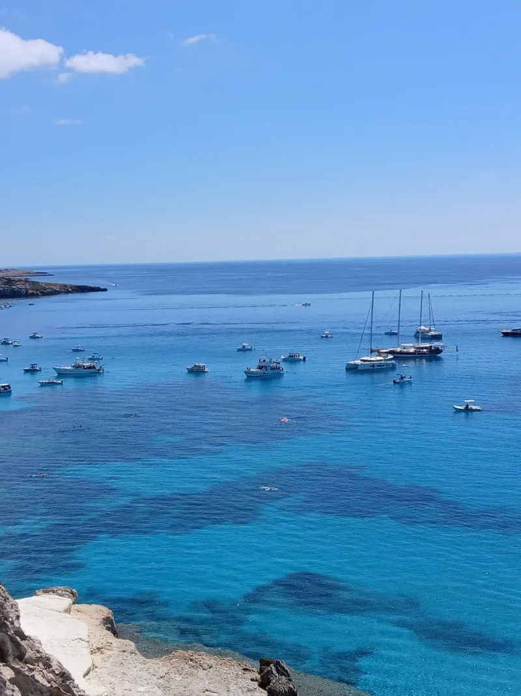

The short answer
Lampedusa is the largest of the Pelagie Islands, the southernmost point of Italy: it is closer to Tunisia than to Sicily. You go for the sea. The famous Rabbit Beach (Spiaggia dei Conigli) is free, but in summer access is limited and you must book a slot online. Fly from Palermo or Catania (all year) or from Rome and Milan (summer), or take the overnight ferry from Porto Empedocle. The best months are June and September; plan at least 3–4 days.
Why Lampedusa
The island is flat, dry and rocky, with almost no trees: it does not look like the rest of Italy. But along the south coast the limestone cliffs drop into water so clear that boats seem to float in the air. The north side is wilder, with high cliffs and sunsets over the open sea. In the evening life moves to Via Roma, the main street of the town, full of restaurants, gelato and people walking.

Rabbit Beach: how to book
Spiaggia dei Conigli lies inside the Riserva Naturale Isola di Lampedusa, a protected area managed by Legambiente. It is one of the few beaches in Italy where loggerhead sea turtles (Caretta caretta) still lay their eggs, so the rules are strict.
- Booking: in the summer season, entry is limited and allowed only with a free online booking, with time slots. Book as soon as you know your dates, especially for August.
- The walk: from the car park on the road to Capo Ponente it is about 15–20 minutes on foot on a dirt path, then steps down to the bay. Wear proper shoes.
- Bring everything: there is no bar, no shade and no shops on the beach. Take water, food and a hat.
- Closed in the evening: the beach closes at night to protect the turtle nests.
The best coves and beaches
- Cala Pulcino: a wild cove of white pebbles on the south-west coast, also in the reserve, reached by a steep path.
- Tabaccara: the famous "floating boats" bay, best seen from a boat or from the cliffs above.
- Cala Croce and Cala Madonna: small, easy-to-reach coves with very clear water.
- Cala Greca: shallow and sheltered, good for families.
- Guitgia: the town beach, sandy and with services, perfect if you have little time.
A boat day around the island
Many coves are best reached by sea. From the port, small boats offer full-day tours around the island with swimming stops and lunch on board. It is the easiest way to see Tabaccara and the north coast. Choose a small group, and avoid days with strong wind: the operators will tell you which side of the island is calm.
With an extra day, a boat or hydrofoil takes you to Linosa, the small volcanic island nearby: black rocks, colourful houses and very few people.
How to get to Lampedusa
| How | From | Good to know |
|---|---|---|
| Plane | Palermo and Catania (all year); Rome, Milan and other cities (mainly summer) | About 1 hour from Sicily. Book early for July and August. |
| Overnight ferry | Porto Empedocle (near Agrigento) | About 9 hours, with cabins. You can bring a car, but on the island you do not need one. |
| Hydrofoil | Porto Empedocle, in summer | Faster than the ferry, but it can be cancelled with rough sea. |
To reach Porto Empedocle, combine the trip with our Sicily in 7 days itinerary: Agrigento and the Valley of the Temples are just a few kilometres away.
When to go
- June and September: the best balance. The sea is warm, prices are lower and Rabbit Beach is less crowded.
- July and August: hot, lively and expensive. Book flights, rooms and the beach well in advance.
- May and October: quiet and often still warm enough to swim, but some services and boat tours run less often.
- Winter: mild, but windy and very quiet. Fine for walking, not for the beach.
Getting around
- Scooter: the classic choice. The island is small, distances are short and parking is easy.
- Small car or buggy: more comfortable with children or luggage. Rent in town, near the port or the airport.
- Local bus: in summer it links the town with the main beaches, including the road to Rabbit Beach.
- On foot: the town, the port and Guitgia beach are all walkable.
Where to stay and what to eat
Stay in Lampedusa town: everything is there, including restaurants, rentals and boat tours. Holiday apartments are common and often cheaper than hotels. For dinner, try fresh fish and pasta with tuna or sea urchin, Sicilian cannoli and granita, and the local pane cunzato. For prices and good manners at the table, read eating out in Italy.

Rules to respect
- Do not take sand, stones or shells: it is forbidden and fined.
- Inside the reserve, follow the marked paths and the rangers' instructions.
- If you see a turtle nest fenced off on the sand, keep your distance.
- Use reef-safe sun cream and take all your rubbish back with you.
Plan your days in Lampedusa
Some links are affiliate links: booking through them costs you nothing extra and helps keep 687 free.
Your island days, planned and adaptable.
In 687 Italy the Nearby map finds free beaches and lidos around you, and the trip plan follows the weather day by day. If the wind changes, NOW suggests what to do instead.
Sources
- Regione Siciliana – rules for Rabbit Beach
- Comune di Lampedusa e Linosa
- Siremar – ferries to the Pelagie Islands
- Liberty Lines – hydrofoils
Checked against these official sites in November 2026. Prices and rules can change: always confirm before you travel.